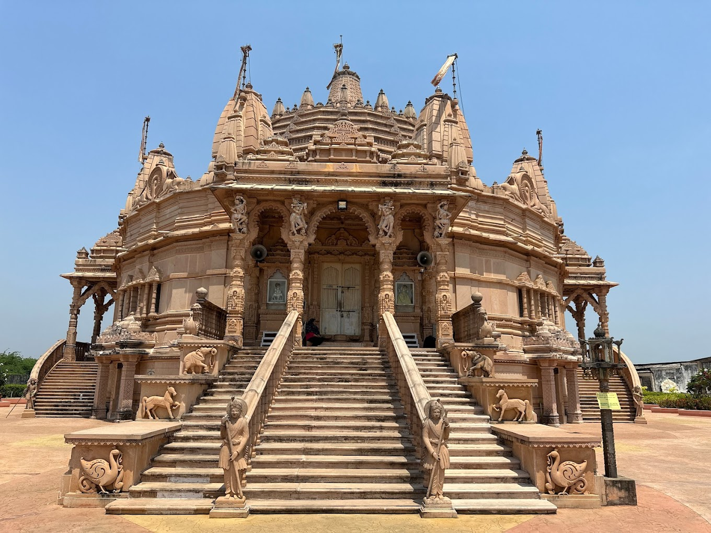

Jain Temple

Temple Name: Jain Temple
History: Presently the Jains have got constructed the 24th Theerthamkara Theerthadam in the five acres of land near Kakutur Village. The foundation of the Theerthadam was laid in 1988 and on 25-4-1996 the chief of the Jains. Acharya Vijaya Sree Kalapoorna Sureswar Maharaj consecrated the idol of Mahaveer.
Maps